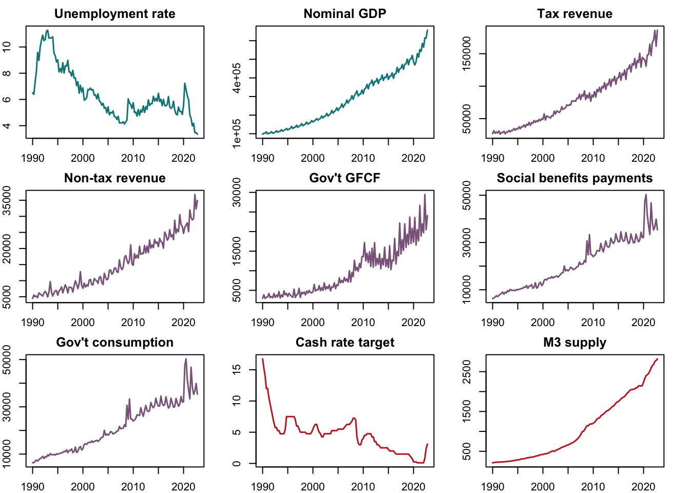

Effects of fiscal policy on unemployment and output in Australia: a Bayesian Structural Vector Autoregression approach
Abstract. This study attempts to estimate the effect of different fiscal policy instruments on unemployment and output in Australia, using a Bayesian Structural Vector Autoregression approach. Impulse response functions and forecast variance error decomposition methods are used to analyze these effects.
Keywords. Fiscal policy, unemployment, GDP, Australia impulse response, forecast variance error decomposition, bsvars, R
Introduction
In many countries, fiscal policy is viewed as a direct means of achieving inclusive development objectives, frequently articulated as twin goals of sustained growth and low poverty (often achieved through low unemployment). However, fiscal policy shocks often occur in multifaceted ways, with simultaneous changes in both revenue and expenditure-side elements of the fiscal balance, making it difficult to disentangle the effects of any one particular policy.
This study attempts to identify the effect of the following fiscal policy instruments: tax policy, public investment expenditures, and social transfers, on both unemployment and output in the Australian context, using Bayesian Structural Vector Autoregression (BSVAR) approach.
The analysis is guided by the work of Abubakar, Attahir B. (2016), which used a SVAR approach to estimate the effect of public expenditures and public revenues on Nigerian output and unemployment. This study extends this work by using a more extensive dataset, involving more disaggregated revenue and expenditure variables, the inclusion of monetary policy control variables, as well as through the use of Bayesian estimation.
Data sources
Quarterly data from Q1 1990 to Q4 2022 was sourced from the Australian Bureau of Statistics and the Reserve Bank of Australia and extracted using the readabs and readrba packages in R.
Outcome variables:
- Unemployment rate and nominal GDP
Explanatory variables of interest
Revenue: Tax and non-tax (gross income less tax) revenue
Spending: Public gross fixed capital formation and social assistance payments, government final consumption
Control variables:
- Monetary policy: cash rate target and M3 money supply
Table 1. Data from ABS and RBA
As seen in the figures below, Australian GDP output has been on a relatively steady, upward trend since 1990, along with fiscal revenue and spending. These have been largely accommodated by lowering of interest rates and an expanding money supply. Overall, these have been associated with a downward, albeit volatile trajectory in the unemployment rate. Following the advice of Doppelt (2021), the data is left in original, seasonally-unadjusted form but will be transformed into natural log terms during the analysis.
Figure 1. Time series plots: 1990 Q1 to 2022 Q4, original values

Preliminary data analysis
ACF and PACF analysis
ACF plots show strong, positive, and gradually decaying autocorrelation structures across all variables. Moreover the PACF plots indicate a near-one value at the first lag and much lower, mostly statistically zero values at higher lag orders. These characteristics may be indicating that the variables are following a random walk with drift process and as such may be unit-root non-stationary.
Figure 2.1. Autocorrelation function (ACF) plots

Figure 2.2. Partial autocorrelation function (PACF) plots

Augmented Dickey-Fuller test for unit roots
Table 2. ADF test results: levels, first, and second difference
Augmented Dickey-Fuller tests following the maximum lag-setting procedure of Ng and Perron (1998) were performed on all nine variables. The null hypothesis that a unit roots exists was rejected for ADF tests on levels of tax revenue, non-tax revenue, social benefits payments, government consumption, and M3 supply, indicating that these variables do not have a unit-root. Meanwhile, the first differences of the unemployment rate, government GFCF, and M3 supply variables yielded a significant ADF test result, indicating that these have order of integration of 1. Lastly, it took another differencing for nominal GDP to yield a significant result, indicating an order of integration of 2.
Model specification
Structural form (SF) model
The following SVAR model is specified to represent the system through which the included variables are jointly determined:
\[ \begin{align} B_0y_t &= b_0 + B_1 y_{t-1} + \dots + b_p y_{t-p} + u_t\\ u_{t}| Y_{t-1} &\sim _{iid} ( 0, I_N) \end{align} \] Where \(y_t\) is a vector of endogenous variables:
\[y_t=\begin{pmatrix} unemp_t &= \text{unemployment rate} \\ nomgdp_t &= \text{nominal GDP} \\ totaltax_t &= \text{tax revenue} \\ nontax_t &= \text{non-tax revenue} \\ pubinv_t &= \text{government gross fixed capital formation} \\ pubtrans_t &= \text{social assitance and benefits payments} \\ pubcons_t &= \text{government final consumption} \\ cashrate_t &= \text{cash rate target} \\ M3_t &= \text{M3 money supply} \end{pmatrix}\]
and the structural matrix \(B_0\) summarizes the contemporaneous relationships between these variables.
Reduced form (RF) model
\[ \begin{align} y_t &= \mu_0 + A_1 y_{t-1} + \dots + A_p y_{t-p} + \varepsilon_t\\ \text{where }B_0^{-1}u_t &= \varepsilon_t| Y_{t-1} \sim _{iid} ( 0, \Sigma)\\ \Sigma &= B_0^{-1}B_0^{-1'} \end{align} \]
The study will utilize impulse response functions and forecast error variance decomposition methods to measure the effects of the four fiscal levers in the model on the unemployment rate and GDP output.
References
Abubakar, Attahir B. (2016): Dynamic effects of fiscal policy on output and unemployment in Nigeria: An econometric investigation, CBN Journal of Applied Statistics, ISSN 2476-8472, The Central Bank of Nigeria, Abuja, Vol. 07, Iss. 2, pp. 101-122
Doppelt, Ross (2021): Should Macroeconomists Use Seasonally Adjuted Time Series? Structural Identification and Bayesian Estimation in Seasonal Vector Autoregressions, Manuscript, Michigan State University